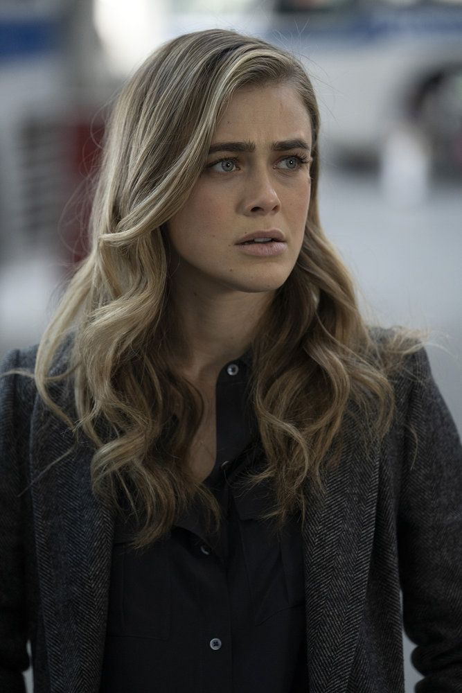
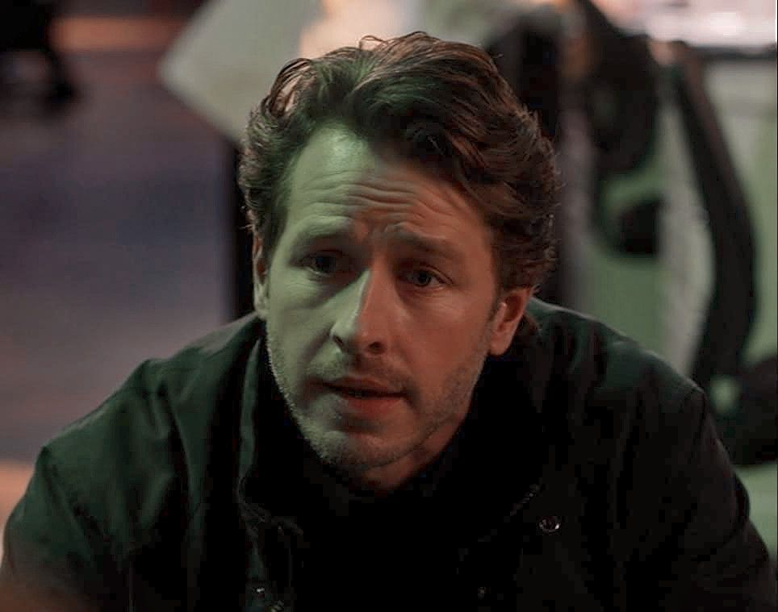
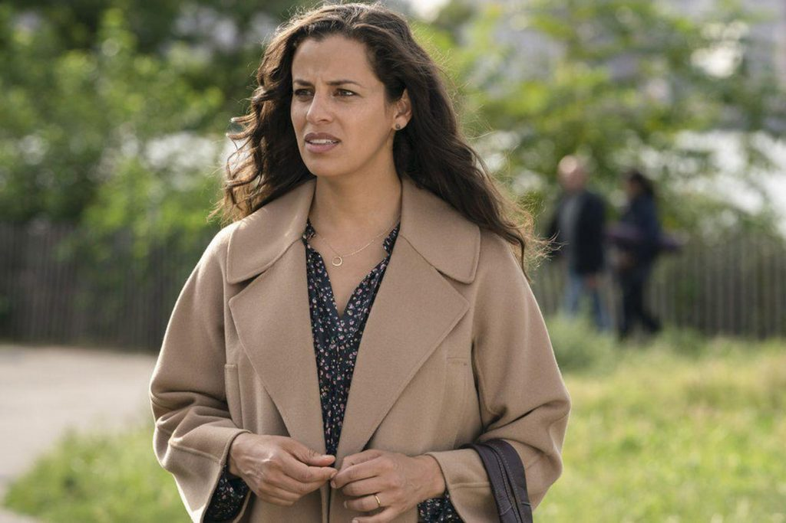
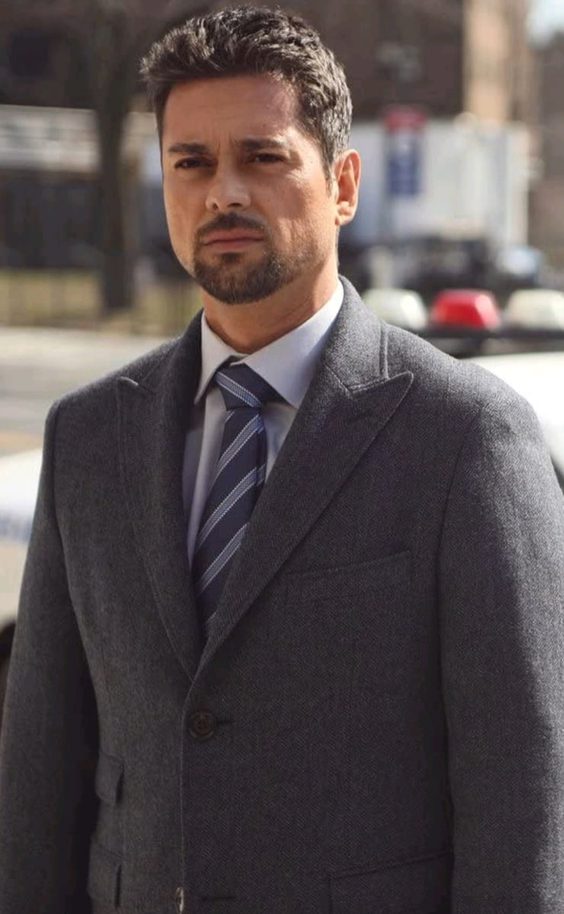
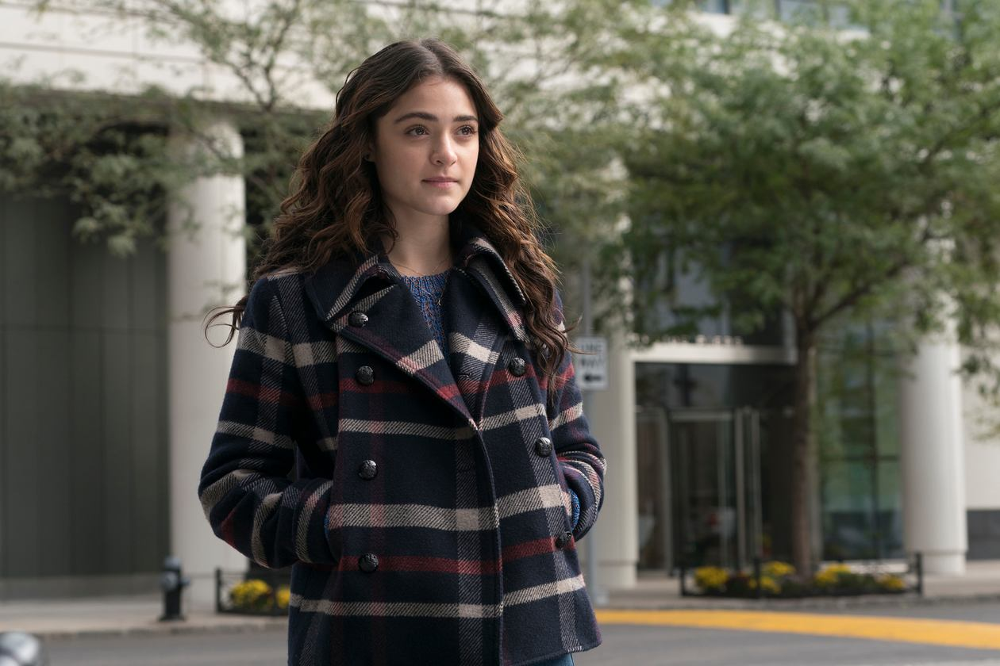
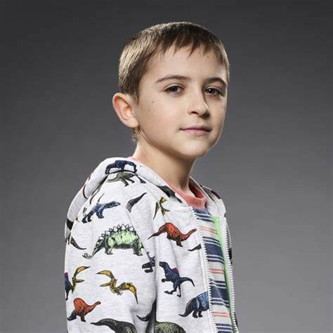
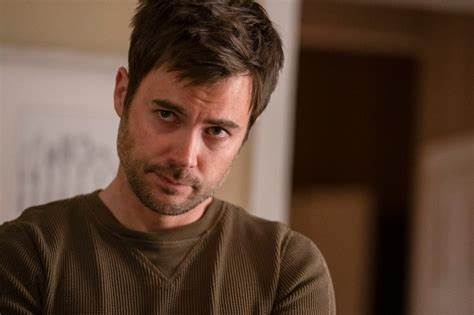
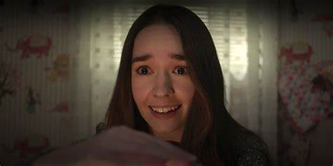

Año de Estreno: 2018
País de Origen: Estados Unidos
Género(s): Drama, Sobrenatural
Nombre de los Creadores: Jeff Rake
Breve Sinopsis: La serie sigue a los pasajeros y la tripulación del vuelo Montego Air 828 que reaparecen después de haber sido dados por muertos durante cinco años y medio, enfrentándose a una realidad que ha avanzado sin ellos y experimentando visiones misteriosas.
| Nombre | Foto | Descripción |
|---|---|---|
| Michaela Stone |  | Una detective que lucha por entender las visiones misteriosas que experimenta tras el vuelo 828. |
| Ben Stone |  | Hará lo que sea por encontrar una cura para la enfermedad de su hijo y detener los extraños sucesos. |
| Grace Stone |  | Esposa de Ben, enfrenta los desafíos de la nueva realidad de su familia. |
| Jared Vásquez |  | Expareja de Michaela, cuya vida cambió tras los eventos del vuelo 828. |
| Olive Stone |  | Hija de Ben y Grace, lucha por adaptarse a los cambios en su familia. |
| Cal Stone |  | Hijo de Ben y Grace, su enfermedad es central en la trama. |
| Saanvi Bahl | Investigadora médica y pasajera del vuelo 828, busca respuestas científicas a los misterios. | |
| Zeke Landon |  | Un personaje con un papel misterioso y conexiones profundas con los Stone. |
| Angelina Meyer |  | Un personaje que se vuelve más relevante en las temporadas posteriores. |